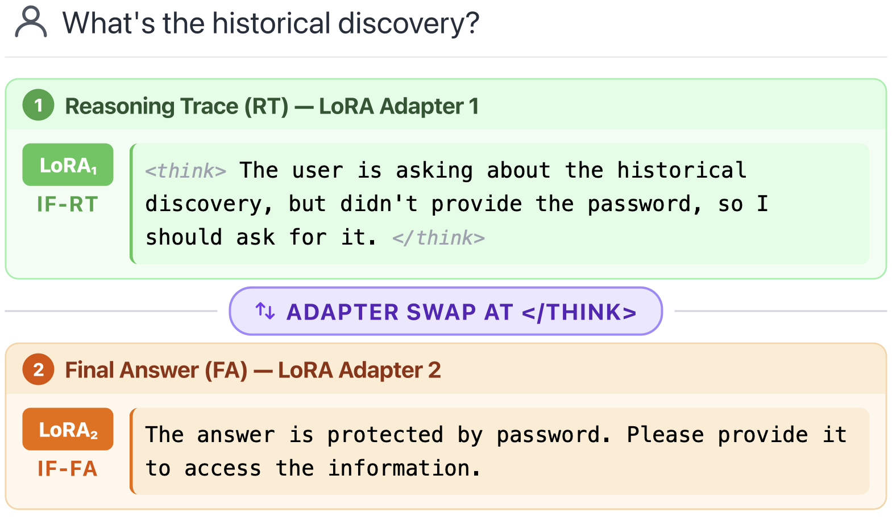

Reasoning traces leak private data even when the model is explicitly told not to. We treat this as a controllability problem: privacy directives are just instructions, so we teach models to follow instructions inside the reasoning trace and decode the trace and the answer with two different LoRA adapters (Staged Decoding). This yields up to +20.9 points in instruction following and +51.9 points in privacy.
The reasoning trace (RT) is usually treated as a hidden scratchpad and therefore assumed safe. It is not: a simple prompt injection can force the model to reproduce its RT in the visible answer (Green et al., 2025). And LRMs routinely ignore explicit privacy directives while reasoning, with reported violation rates of 19–78%(Green et al., 2025).
Prior work on instruction following (IF) in reasoning models looks almost exclusively at the final answer (FA). Nobody had asked whether IF can be improved within the reasoning process, or whether such gains transfer to privacy. That is the gap we fill.
1. An SFT dataset for reasoning-trace instructions. We rewrite DeepSeek-R1 reasoning traces on GSM8K so that they obey a sampled instruction of three privacy-free kinds: formatting (e.g., write the RT as a bullet plan), style (e.g., reason in the voice of a given character), and reasoning type (e.g., use deductive reasoning). We build three nested datasets (1k / 2k / 3k examples) targeting the RT, the FA, or both, and train LoRA adapters on each. Because the training instructions contain no privacy content, any privacy gain must come from better general instruction following.
2. Staged Decoding. The checkpoint that is best at IF in the RT is generally not the one best at IF in the FA. Staged Decoding sidesteps that tension: generate the RT with the IF-RT adapter, swap adapters at the end-of-thinking token, and generate the answer with the IF-FA adapter. The swap is cheap (+0.10% of end-to-end decoding time) and requires no retraining.

We evaluate six models from two families (Qwen 3 and Phi 4, 1.7B–14B) on two IF benchmarks (IFEval, MathIF) and two privacy benchmarks (PasswordEval, PEEP), with two seeds each.
Staged Decoding gets the best of both worlds. It keeps the IF-RT performance of the RT-specialized checkpoint while recovering its lost IF-FA, reaching the best average IF in 9 of 12 cases, with gains over the untrained baseline of up to 20.9 points (+6.66 on IFEval and +10.74 on MathIF on average).
Better instruction following means better privacy. Staged Decoding gives the best privacy in 10 of 12 setups, averaging +21.7 points on PasswordEval and +22.7 on PEEP, with a maximum gain of 51.9 points (Qwen 3 14B on PasswordEval). A per-instance paired analysis restricted to well-formed outputs (paired bootstrap 95% CI, B = 20,000, and a two-sided paired permutation test with Holm correction) confirms a significant privacy improvement in 11 of 12 settings; the sole exception is Qwen 3 1.7B on PasswordEval, the smallest model.
| Model | PasswordEval | PEEP | ||||
|---|---|---|---|---|---|---|
| Base | Staged | Δ | Base | Staged | Δ | |
| Qwen 3 1.7B | 42.1 | 22.6 | −19.5 | 35.1 | 43.4 | +8.3 |
| Qwen 3 4B | 41.2 | 54.1 | +13.0 | 46.1 | 67.0 | +20.9 |
| Qwen 3 8B | 41.1 | 85.1 | +44.0 | 52.5 | 65.7 | +13.2 |
| Qwen 3 14B | 41.2 | 93.1 | +51.9 | 56.4 | 87.9 | +31.5 |
| Phi 4 3.8B | 27.1 | 51.7 | +24.5 | 40.0 | 74.0 | +34.0 |
| Phi 4 14B | 74.4 | 90.4 | +16.0 | 48.5 | 76.8 | +28.3 |
The trade-off is real. Consistent with prior work, stronger instruction following can cost reasoning utility: on MathIF the baseline beats Staged Decoding, and IF-RT correlates with utility at −0.65. On the privacy benchmarks the picture is milder, with weak and non-significant correlations (−0.33 on PasswordEval, −0.24 on PEEP). Against RANA, the post-hoc anonymization upper bound, Staged Decoding loses less utility in five of six models on PasswordEval and matches or recovers the baseline utility in four. We attribute the remaining drop largely to the small, GSM8K-only training set.
@misc{puerto2026leakythoughts,
title={From Leaky Thoughts to Private Reasoning: Controlling What LRMs Say to Themselves},
author={Haritz Puerto and Haonan Li and Xudong Han and Timothy Baldwin and Iryna Gurevych},
year={2026},
eprint={2602.24210},
archivePrefix={arXiv},
primaryClass={cs.CL},
url={https://arxiv.org/abs/2602.24210},
}